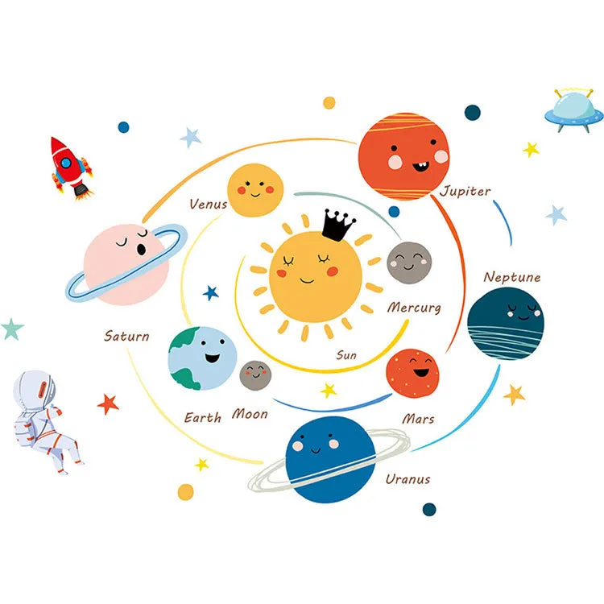
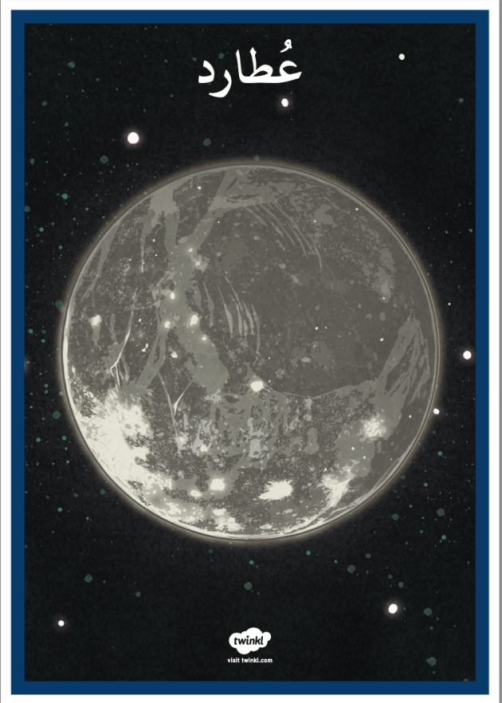
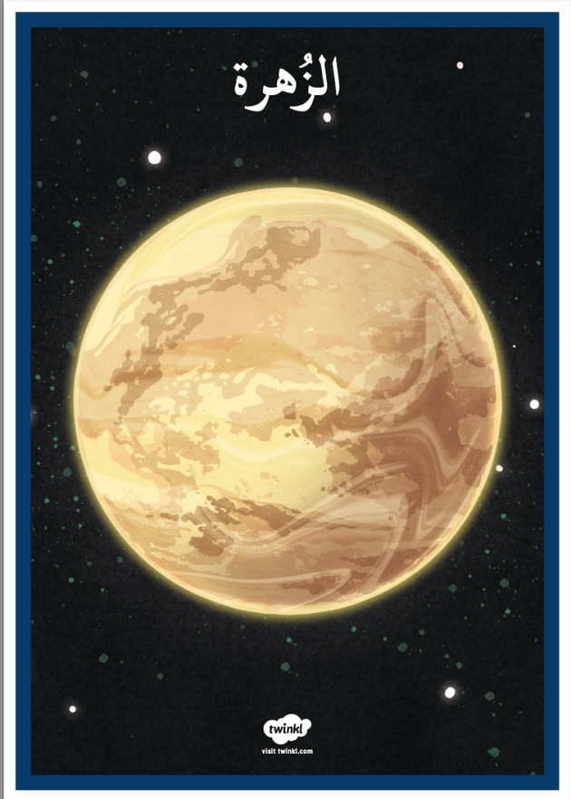
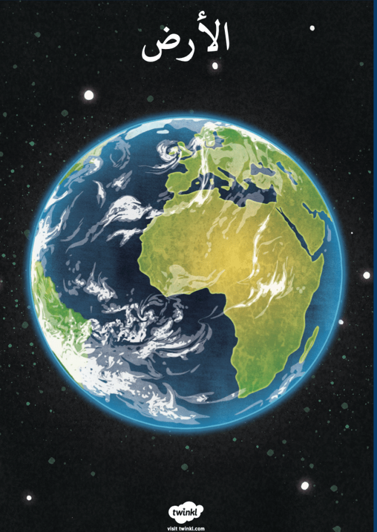
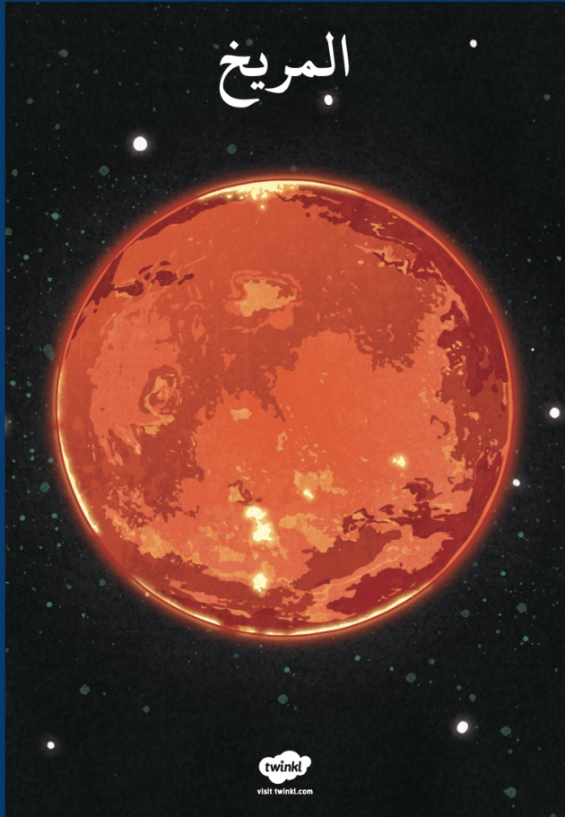
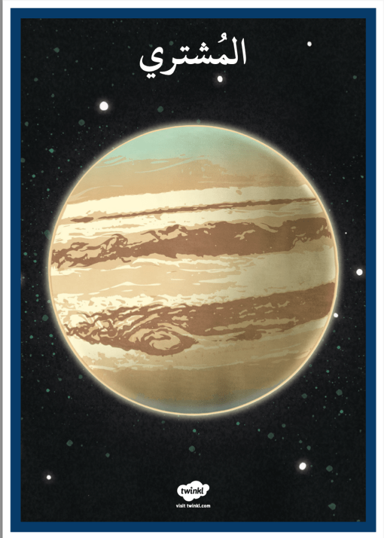
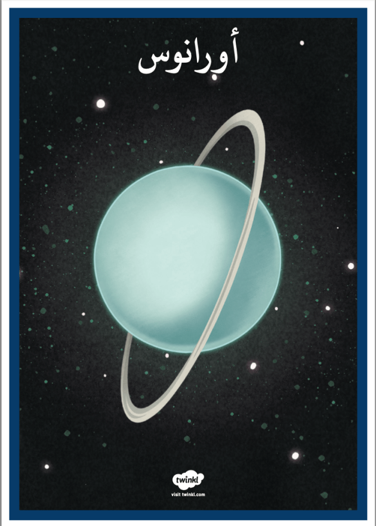
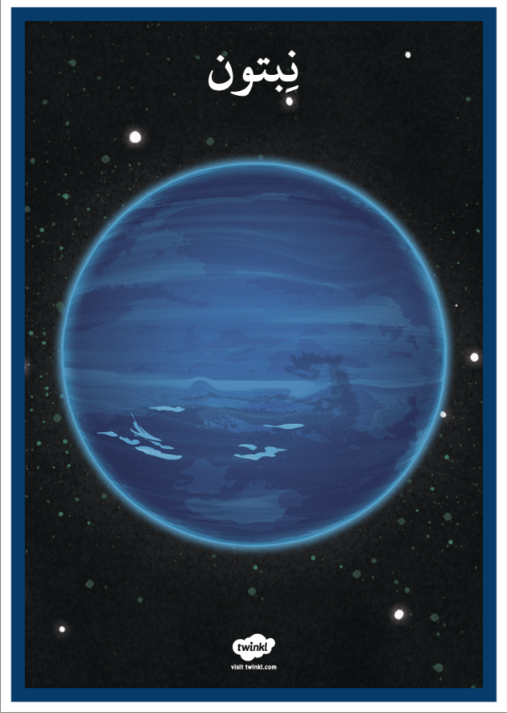

"
1) عطارد (Mercure):

- هو أقرب كوكب للشمس وأصغرها.
- سطحه حار جدًا في النهار وبارد جدًا في الليل.
- لا يوجد عليه هواء أو ماء.
2) الزهرة (Vénus):

- يُعرف بـ "توأم الأرض" لأنه قريب من حجم الأرض.
- هو الكوكب الأكثر سخونة بسبب غلافه الجوي السميك
- يمكن رؤيته لامعًا في السماء ليلاً.
3) الأرض (Terre):

- كوكبنا الجميل، وهو الوحيد الذي نعرف أن عليه حياة.
- فيه الهواء، الماء، والنباتات، وكل ما نحتاجه لنعيش.
4) المريخ (Mars):

- يسمى "الكوكب الأحمر" بسبب تربته التي تحتوي على الكثير من الحديد.
- يعتقد العلماء أنه كان هناك ماء على سطحه في الماضي.
- يتميز بوجود جبال وبراكين كبيرة.
5) المشتري (Jupiter):

- أكبر كوكب في المجموعة الشمسية.
- لديه عاصفة ضخمة تسمى "البقعة الحمراء العظيمة".
- لديه أكثر من 75 قمرًا!
6) زحل (Saturne):
.jfif)
- مشهور بحلقاته الجميلة التي تتكون من الجليد والغبار.
- ثاني أكبر كوكب بعد المشتري.
7) أورانوس (Uranus):

- كوكب أزرق بسبب غازات الميثان في غلافه الجوي.
- يدور على جانبه مثل كرة تتدحرج!
8) نبتون (Neptune):

- هو أبعد كوكب عن الشمس.
- يتميز برياح قوية جدًا، أسرع من أي كوكب آخر.
نشاط للأطفال:
- رسم المجموعة الشمسية وترتيب الكواكب حسب قربها من الشمس.
🌟 استمتعوا باستكشاف الفضاء الرائع! 🌌